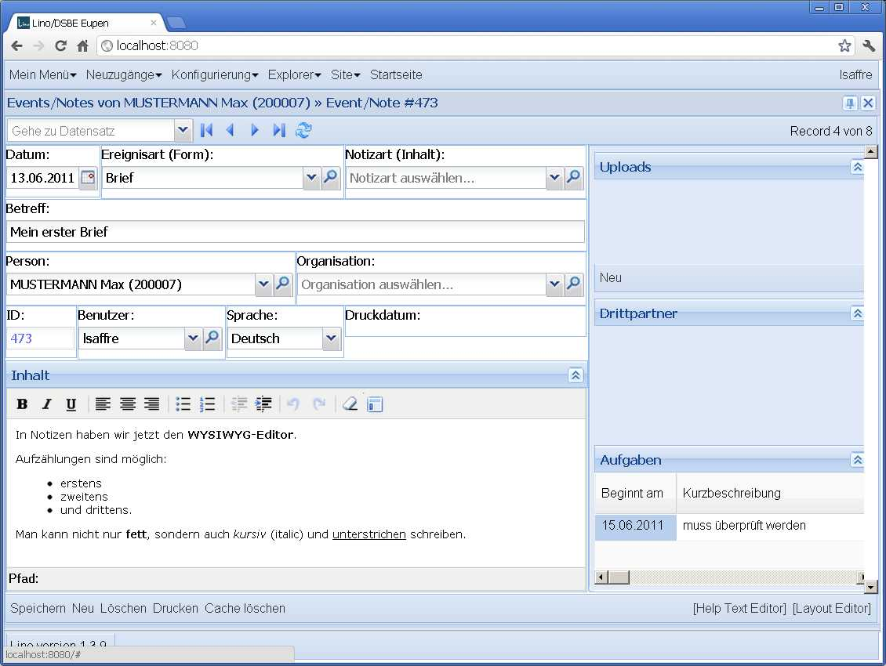
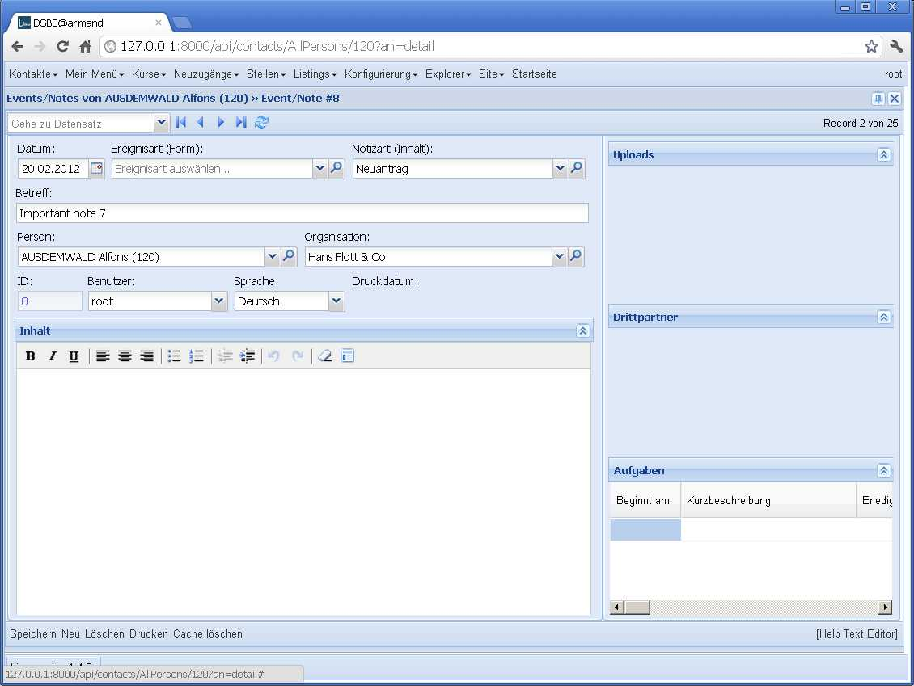

20120217¶
Wednesday I started another avalanche of code changes. The triggering reason was that we wanted to define field sets and their labels in a form’s layout, not on the model.
Lino was under narcose for two days and now is waking up with some fundamental parts replaced by a shiny new approach. That’s why we switch to version 1.4.0.
lino.core.fields.FieldSet has been completely removed
Detail Layouts are no longer defined in separate .dtl files, and not even in separate .py files, they are just defined in the code.
One short-term disadvantage is that the “[Layout editor]” button is no longer possible since the definition can be more complex and spread across several source code files. But I’m dreaming about a new button “Show Source Code” that would open a “Source Code Inspector” with optional “Edit” buttons...
Advantages:
There is now a comprehensible solution for defining labelled field groups
Using inheritance and writing “intelligent” layouts are now possible. Examples are
lino.modlib.jobs.models.JobProviderDetailandlino.apps.pcsw.models.CourseProviderDetailwho inherit fromlino.apps.pcsw.models.CompanyDetail.For simple cases, e.g.
lino.modlib.notes.models.EventTypeit easier to just say:detail_template = """ id name remark:60x3 notes.NotesByEventType:60x6 """
than to create a file
/lino/modlib/notes/config/notes/Note/1.dtlwith basically the same content.
Another side effect is that I finally found a solution for longterm layout bug. Here is how the detail of a note has been looking “from the beginning”:
Now it finally looks as it always should have :

{kind=link}
{kind=link}